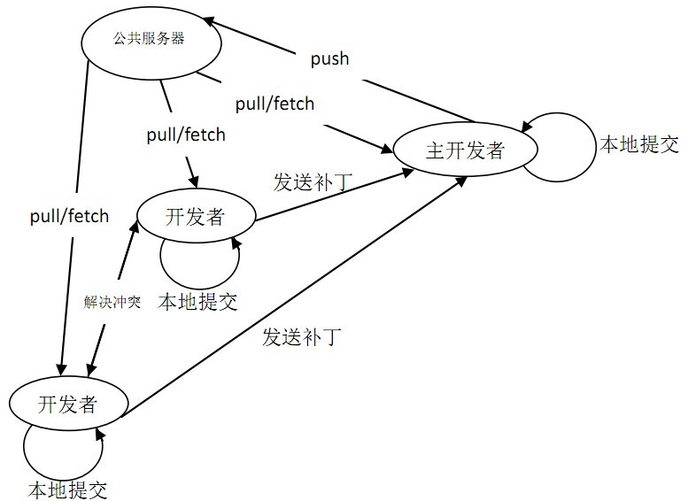
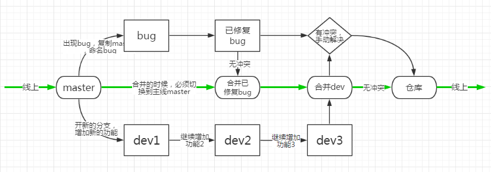

Git是一个\(\color{red}{开源}\)的分布式版本控制系统，可以有效、高速地处理从很小到非常大的项目版本管理。
如图所示： 
任何文件,只要有任何\(\color{red}{改动}\),哪怕一个字节也好,都会重新创建一个副本，以牺牲磁盘空间来换取无线控制上的灵活和管理的高效。
Linus在1991年创建了开源的Linux，到了2002年，代码库之大让Linus很难继续通过手工方式管理了，于是Linus选择了一个商业的版本控制系统BitKeeper，BitKeeper的东家BitMover公司出于人道主义精神，授权Linux社区免费使用这个版本控制系统。
但2005年时，开发Samba的Andrew试图破解BitKeeper的协议，被BitMover公司发现了，于是要收回Linux社区的免费使用权。于是Linus花了两周的时间自己用C写了一个分布式版本控制系统，这就是Git。
步骤如下：
步骤如下：
\(\color{red}{注意：}\)使用Windows系统，需要确保目录名不包含中文
步骤如下：
\(\color{red}{注意：}\)
git add把文件添加到仓库，且可反复多次使用，添加多个文件。git commit把文件提交到仓库 使用命令git status可以：
使用命令git diff
有两种方法：
git log能够显示\(\color{red}{从近到远}\)的提交日记git log --pretty=oneline能够得到更\(\color{red}{简洁}\)的信息 使用命令git reset
\(\color{grey}{例}\)：git reset --hard HEAD^即为回退到上一个版本
\(\color{red}{注意：}\)
git⽤HEAD表示当前版本，上一个版本是HEAD^，上上一个版本就是HEAD^^，往上100 个版本写成HEAD~100。
使用命令git reset --hard xxxxxxx（xxxxxxx为原版本号的前几位）
Git管理的是修改，而不是文件。
每次修改，如果不用git add到暂存区，那就不会加入到commit中，即不会被提交。
\(\color{grey}{场景1:}\)
改乱了工作区某个文件的内容，想直接丢弃工作区的修改时
使用命令git reset让文件回到最近一次git commit或git add时的状态
\(\color{grey}{场景2:}\)
改乱了工作区某个文件的内容并添加到了暂存区时，想丢弃修改
使用命令git reset HEAD file把暂存区的修改回退到工作区
\(\color{grey}{场景3:}\)
提交了不合适的修改到版本库时，想要撤销本次提交
使用命令git reset让版本回退
\(\color{grey}{场景:}\)直接在文件管理器中或者用rm命令把文件删除了，此时，工作区和版本库不一致了。若：
git resetgit checkout -- file找一台电脑充当服务器的角色，每天24⼩时开机，其他每个⼈都从这个“服务器”仓库克隆一份到自己的电脑上，并且各自把各自的提交推送到服务器仓库里，也从服务器仓库中拉取别⼈的提交。
\(\color{grey}{场景:}\)
已在本地创建了一个Git仓库，想在GitHub创建一个Git仓库，让这两个仓库进行远程同步。GitHub上的仓库既可以作为备份，又可以让其他⼈通过该仓库来协作。
\(\color{grey}{操作步骤:}\)
\(\color{red}{注意：}\)使用命令git push把本地库的内容推送到远程库
使用命令git clone
图示 
git branch查看分支git branch <name>创建分支git checkout <name>或者git switch <name>切换分支git checkout -b <name>或者git switch -c <name>创建+切换分支git merge <name>合并某分支到当前分支git branch -d <name>删除分支 当Git无法自动合并分支时，就必须\(\color{grey}{首先}\)解决冲突。解决冲突后，再提交，合并完成。
解决冲突就是把Git合并失败的文件手动编辑为我们希望的内容，再提交。
用git log --graph命令可以看到分支合并图。
合并分支时，加上--no-ff参数就可以用普通模式合并，合并后的历史有分支，能看出来曾经做过合并，而fast forward合并就看不出来曾经做过合并。
一般做法
创建新的bug分支进行修复，然后合并，最后删除。
当手头工作没有完成时的做法
在工作现场使用git stash，然后去修复bug，修复后，再使用git stash pop，回到工作现场。
用git cherry-pick <commit>命令，把bug提交的修改“复制”到当前分支，避免重复劳动。
开发一个新feature，最好\(\color{red}{新建}\)一个分支。在新建分支上面开发，完成后合并，最后，删除该feature分支。以避免添加新功能时，扰乱主分支。
如果要\(\color{red}{丢弃}\)一个没有被合并过的分支，可以通过git branch -D <name>强行删除。
git remote -v。git push origin branch-name，如果推送失败，先用git pull抓取远程的新提交。git checkout -b branch-name origin/branch-name，本地和远程分支的名称最好一致。用git branch --set-upstream branch-name origin/branch-name。git pull，如果有冲突，要先处理冲突。分支可移动，标签不可移动。
git tag <tagname>用于新建一个标签，默认为HEAD，也可以指定一个commit id。git tag -a <tagname> -m "blablabla..."可以指定标签信息。git tag可以查看所有标签。git push origin <tagname>可以推送一个本地标签。git push origin --tags可以推送全部未推送过的本地标签。git tag -d <tagname>可以删除一个本地标签。git push origin :refs/tags/<tagname>可以删除一个远程标签。可配置项：
user.nameuser.email.gitignore文件来实现，原则是：
git config --global alias.别名 原命令全名实现 GitHub是一个面向开源及私有软件项目的托管平台，因为只支持Git作为唯一的版本库格式进行托管，故名 GitHub。
除了 Git 代码仓库托管及基本的 Web 管理界面以外，还提供了订阅、讨论组、文本渲染、在线文件编辑器、协作图谱（报表）、代码片段分享（Gist）等功能。
\(\color{grey}{应用场景}\)：
是中国的Github，功能有小部分差异。
主要\(\color{grey}{优势}\)是服务器在国内，在国内访问速度比GitHub快很多，可以免费让自己的仓库他人不可见，且免费账户同样可以建立私有项目。
\(\color{grey}{一般应用场景：}\)在企业内搭建git私服。
\(\color{grey}{原因：}\)GitLab是一款单独的软件，在Git的基础上搭建起来的Web服务。它可以创建私有库，解决了GitHub的免费仓库必须公开源码的问题。